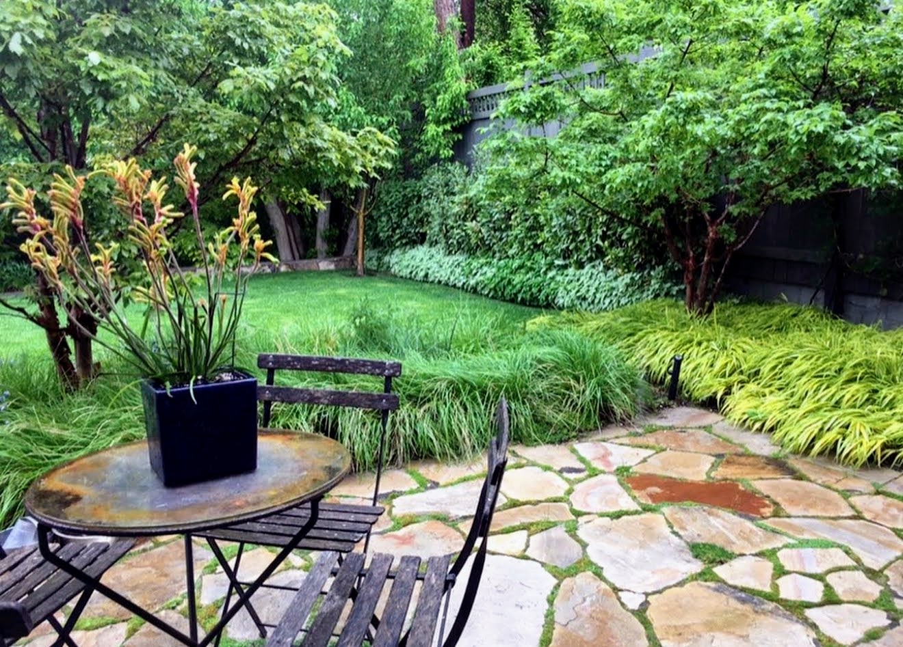

The place
Hidden away in the secluded Yalecrest–Harvard Historic District in Salt Lake City, this significant historical residence was built in 1926, an eclectic blend of English Tudor and Colonial Revival architectural styles. The stone and brick house has been married to its landscape and given a garden with a transformative power to enhance its beauty and link it harmoniously with its surroundings. Red Butte Creek runs along the back of the property, with a stone wall built to connect the property to the land — wonderful views, terrific atmosphere, and wonderful light.
The brief
The owner wanted guidance to simplify what was there. The borders around the house and on the two terraces featured a mix of different elements and landscaping materials; all were redesigned, simplified, and replaced with stone for retaining walls and steps.
The design
Twenty-five new trees were planted to give a sense of privacy. A water trough was added to allow water to play a part in the garden and welcome wildlife. Large paperbark maples and Japanese maples were incorporated into the new design. Crabapples in the upper terrace and dogwood trees in the lower terrace frame the creek, and at the center of the property a large grape vine was established to give the upper and lower terraces a sense of privacy.
Design Development & Documentation
Master Plan: A detailed design specifying exact materials, plant species, and quantities was created. The design emphasized high-efficiency water management and structured planting schemes that balance aesthetics with long-term ecological health.